Extraction review - Group 5 (ru)
136 questions from group-5-ru.pdf - 133 with a picture - 0 with an uncertain picture mapping. The correct option is highlighted in green.
1.PDF page 1 - g5-q001
Транспортные средства проедут перекрёсток в следующей последовательности:
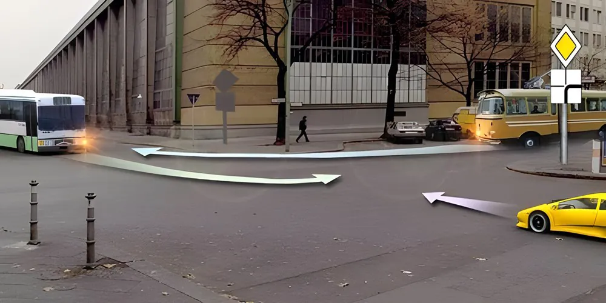
- Легковой автомобиль, автобус, троллейбус.
- Троллейбус и автобус, затем легковой автомобиль.
- Троллейбус, легковой автомобиль, автобус.
Answer: 3
2.PDF page 1 - g5-q002
Первым перекрёсток проедет:
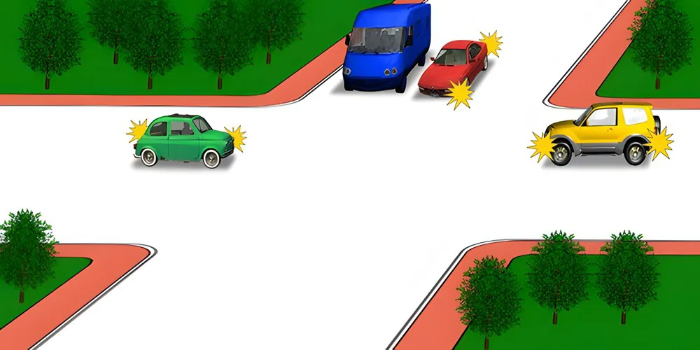
- Красный автомобиль.
- Синий автомобиль.
- Жёлтый автомобиль.
- Зелёный автомобиль.
Answer: 4
3.PDF page 2 - g5-q003
Последним перекрёсток проедет:
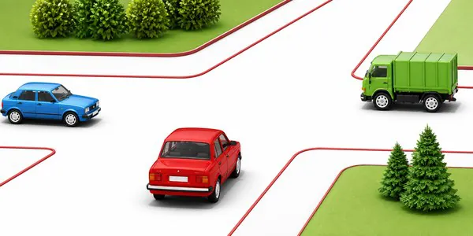
- Синий автомобиль.
- Зелёный автомобиль.
- Красный автомобиль.
Answer: 1
4.PDF page 2 - g5-q004
Синий автомобиль проедет перекрёсток:
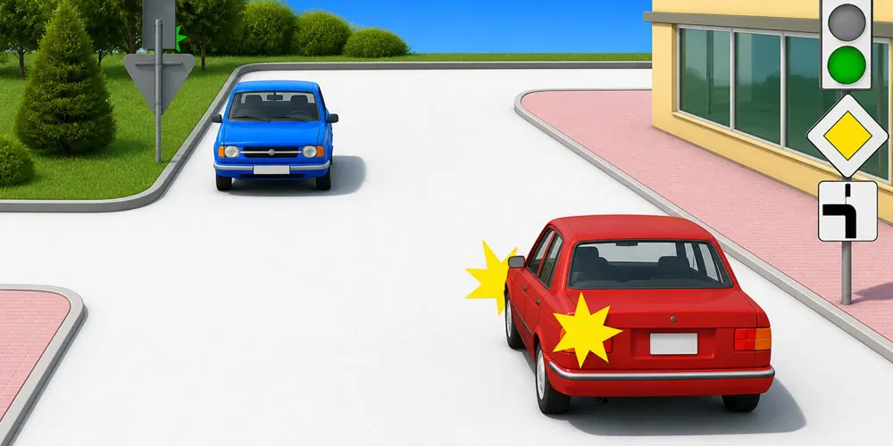
- Первым.
- Вторым.
Answer: 1
5.PDF page 3 - g5-q005
В каком ответе правильно указана очерёдность проезда перекрёстка?
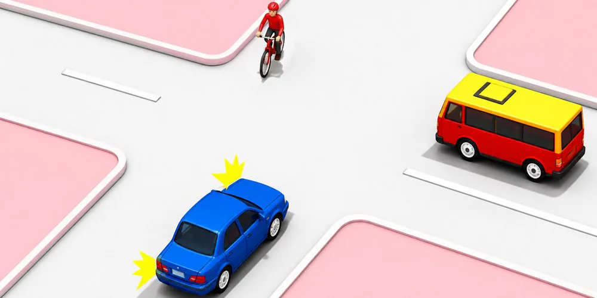
- Автобус, легковой автомобиль, велосипед.
- Легковой автомобиль, автобус, велосипед.
- Велосипед, автобус, легковой автомобиль.
Answer: 3
6.PDF page 3 - g5-q006
Вторым перекрёсток проедет:
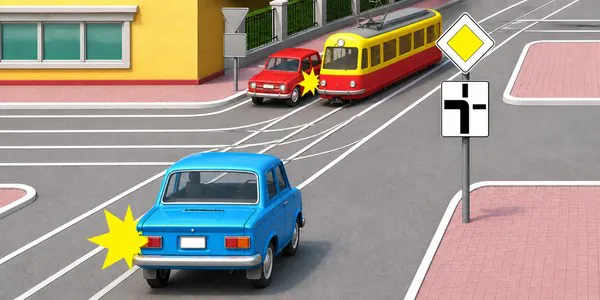
- Трамвай.
- Красный автомобиль.
- Синий автомобиль.
Answer: 1
7.PDF page 4 - g5-q007
В каком направлении движение запрещено?
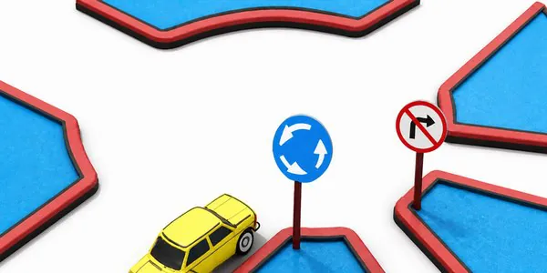
- Направо через первый проезд.
- Направо через второй проезд.
- Направо через первый и второй проезды.
Answer: 2
8.PDF page 4 - g5-q008
Вторым перекрёсток проедет:
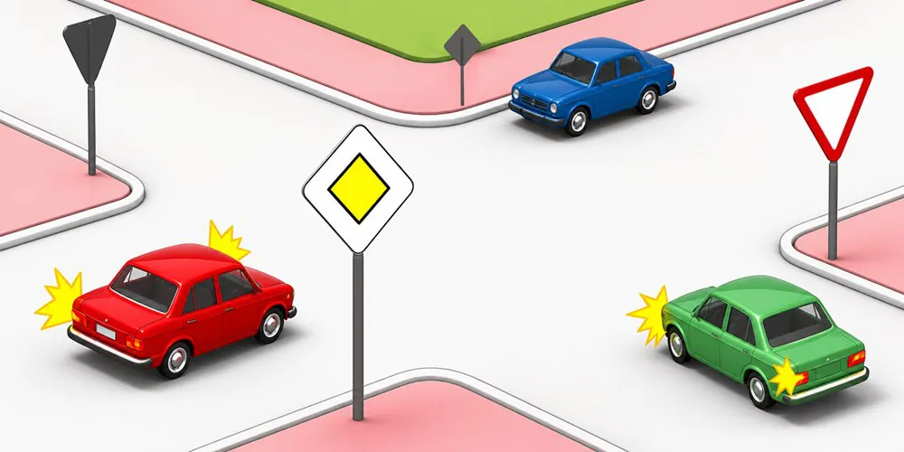
- Зелёный автомобиль.
- Красный автомобиль.
- Синий автомобиль.
Answer: 2
9.PDF page 5 - g5-q009
Вторым перекрёсток проедет:
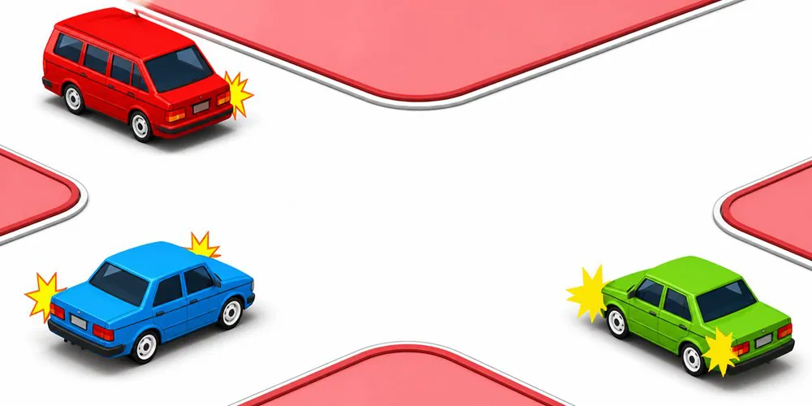
- Синий автомобиль.
- Зелёный автомобиль.
- Красный автомобиль.
Answer: 1
10.PDF page 5 - g5-q010
Вторым перекрёсток проедет:
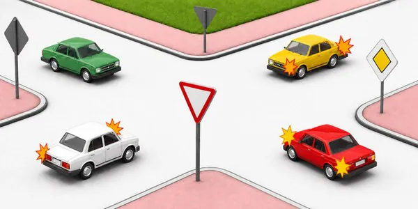
- Белый автомобиль одновременно с жёлтым.
- Красный автомобиль.
- Зелёный автомобиль.
Answer: 2
11.PDF page 6 - g5-q011
Последним перекрёсток проедет:

- Синий автомобиль.
- Жёлтый автомобиль.
- Зелёный автомобиль.
- Красный автомобиль.
Answer: 3
12.PDF page 6 - g5-q012
Водитель какого транспортного средства должен уступить дорогу?
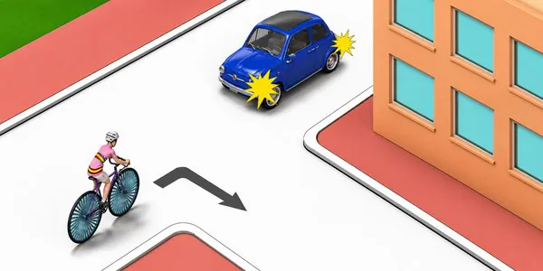
- Велосипедист.
- Водитель автомобиля.
Answer: 2
13.PDF page 7 - g5-q013
Первым перекрёсток проедет:
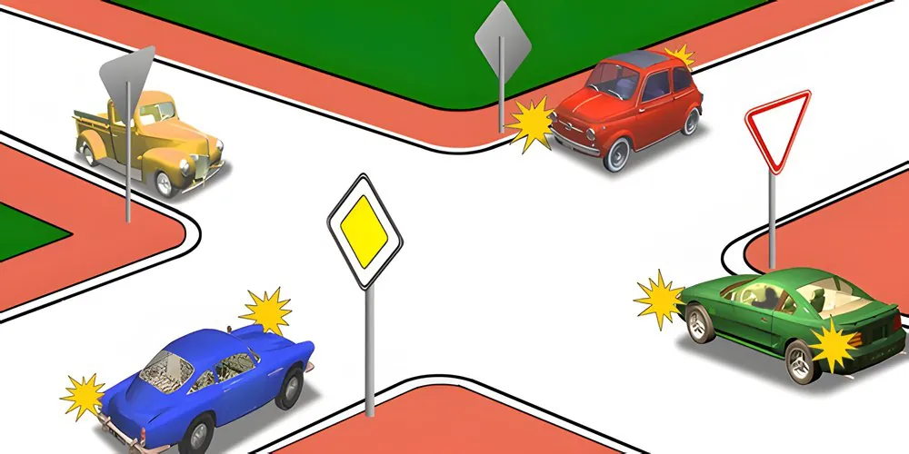
- Зелёный автомобиль.
- Синий автомобиль.
- Красный автомобиль.
- Жёлтый автомобиль.
Answer: 3
14.PDF page 7 - g5-q014
В какой последовательности транспортные средства проедут перекрёсток?
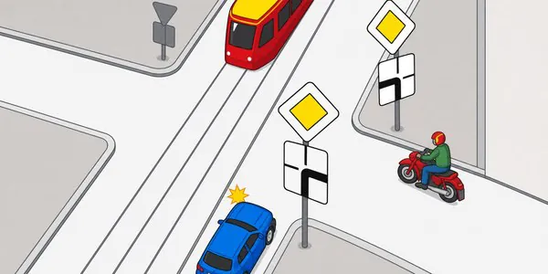
- Мотоцикл, автомобиль, трамвай.
- Трамвай, автомобиль, мотоцикл.
- Трамвай, мотоцикл, автомобиль.
Answer: 1
15.PDF page 8 - g5-q015
Вторым перекрёсток проедет:

- Красный автомобиль.
- Синий автомобиль.
- Зелёный автомобиль.
Answer: 2
16.PDF page 8 - g5-q016
Последним перекрёсток проедет:
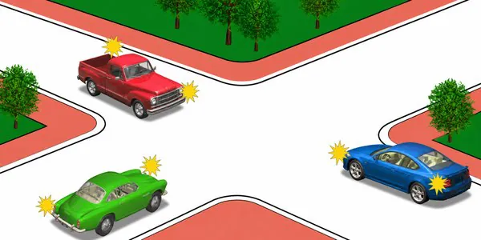
- Зелёный автомобиль.
- Синий автомобиль.
- Красный автомобиль.
Answer: 3
17.PDF page 9 - g5-q017
Какой автомобиль последним проедет перекрёсток?
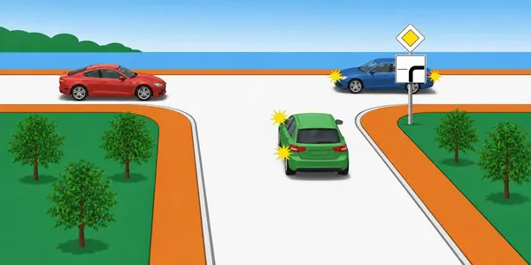
- Синий.
- Красный.
- Зелёный.
Answer: 2
18.PDF page 9 - g5-q018
Первым перекрёсток проедет:
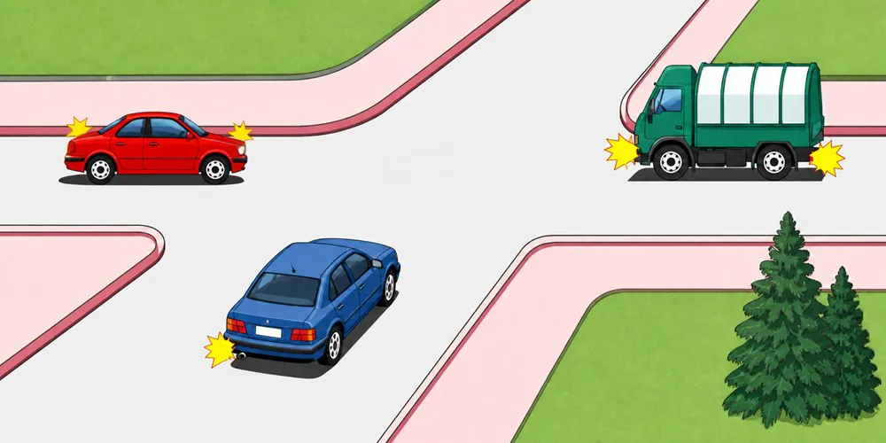
- Зелёный автомобиль.
- Красный автомобиль.
- Синий автомобиль.
Answer: 1
19.PDF page 10 - g5-q019
Водитель какого транспортного средства должен уступить дорогу?
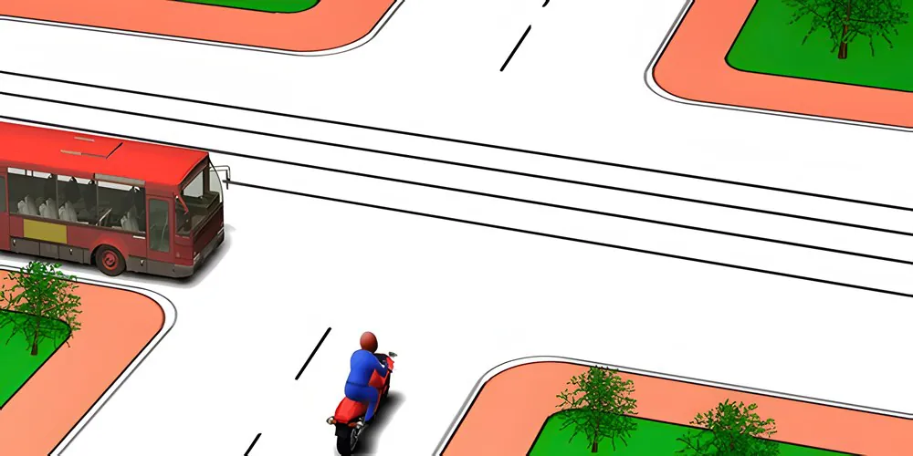
- Водитель автобуса.
- Водитель мотоцикла.
Answer: 1
20.PDF page 10 - g5-q020
Первым перекрёсток проедет:
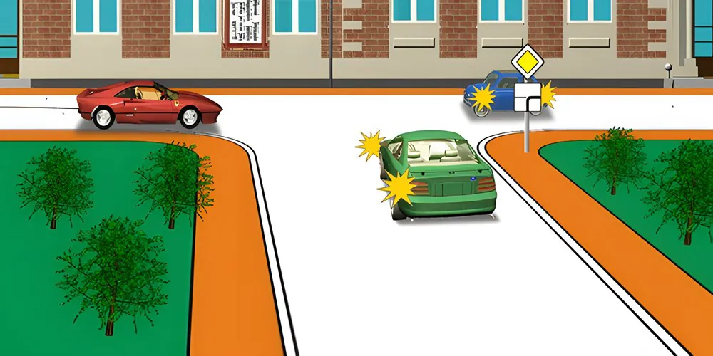
- Красный автомобиль.
- Зелёный автомобиль.
- Синий автомобиль.
Answer: 3
21.PDF page 11 - g5-q021
Вторым перекрёсток проедет:
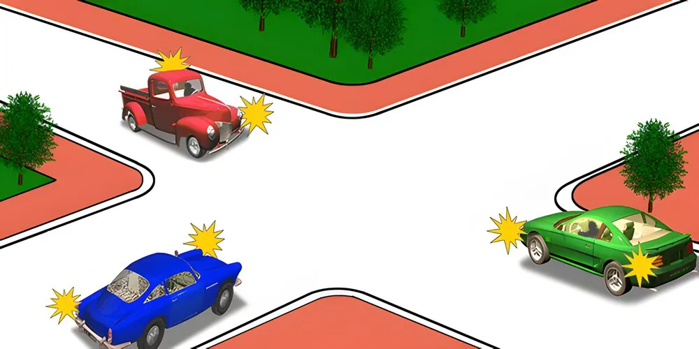
- Синий автомобиль.
- Зелёный автомобиль.
- Красный автомобиль.
Answer: 1
22.PDF page 11 - g5-q022
Третьим перекрёсток проедет:
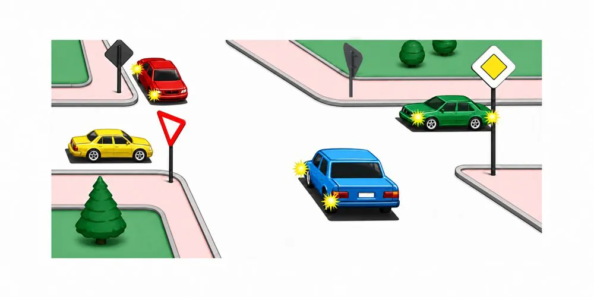
- Синий автомобиль.
- Жёлтый автомобиль.
- Зелёный автомобиль.
- Красный автомобиль.
Answer: 2
23.PDF page 12 - g5-q023
Красный автомобиль:
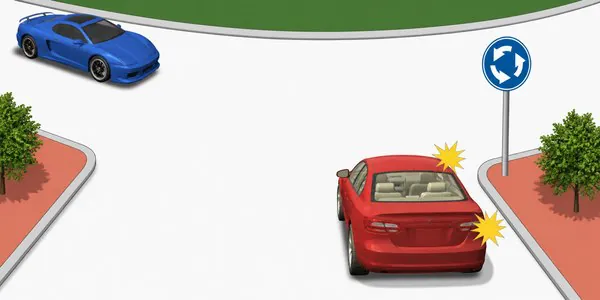
- Имеет преимущество в движении, поскольку приблизился к перекрёстку с круговым движением справа от синего автомобиля.
- Должен уступить дорогу синему автомобилю, движущемуся по перекрёстку с круговым движением.
Answer: 2
24.PDF page 12 - g5-q024
Автомобили проедут перекрёсток в следующей последовательности:
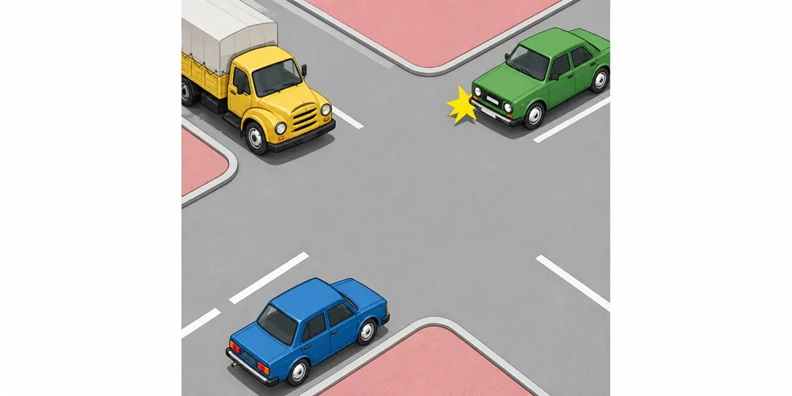
- Жёлтый, зелёный, синий.
- Синий одновременно с зелёным, затем жёлтый.
Answer: 2
25.PDF page 13 - g5-q025
Третьим перекрёсток проедет:

- Жёлтый автомобиль.
- Красный автомобиль.
- Синий автомобиль.
- Зелёный автомобиль.
Answer: 3
26.PDF page 13 - g5-q026
Первым перекрёсток проедет:
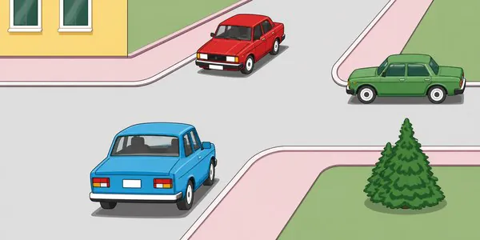
- Зелёный автомобиль.
- Синий автомобиль.
- Красный автомобиль.
Answer: 3
27.PDF page 14 - g5-q027
Транспортные средства проедут перекрёсток в следующей последовательности:
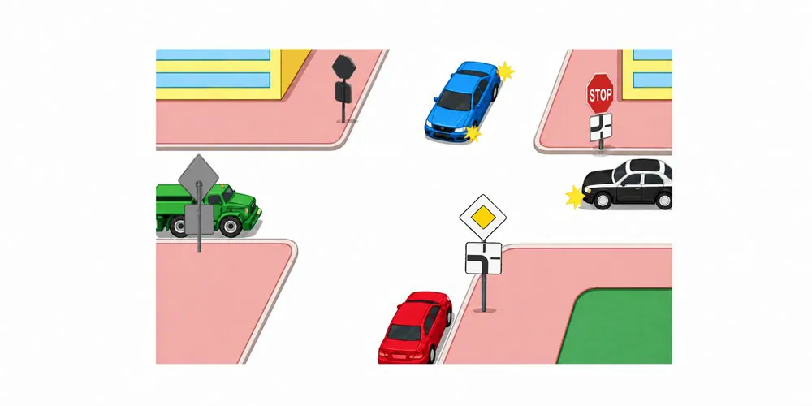
- Красный, зелёный, синий, чёрный.
- Зелёный, красный, чёрный, синий.
- Зелёный, красный, синий, чёрный.
Answer: 1
28.PDF page 14 - g5-q028
Транспортные средства проедут перекрёсток в следующей последовательности:
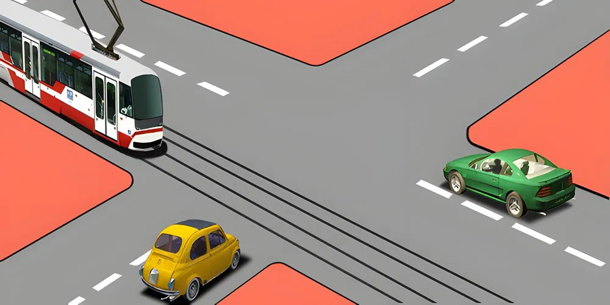
- Трамвай, жёлтый автомобиль, зелёный автомобиль.
- Трамвай и зелёный автомобиль, затем жёлтый автомобиль.
- Зелёный автомобиль, жёлтый автомобиль, трамвай.
Answer: 2
29.PDF page 15 - g5-q029
Кто из водителей имеет преимущество в движении?
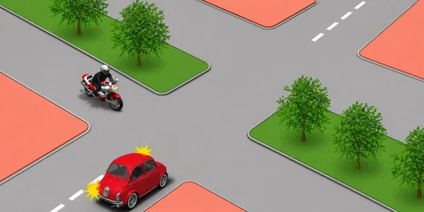
- Водитель мотоцикла.
- Водитель автомобиля.
Answer: 2
30.PDF page 15 - g5-q030
Вторым перекрёсток проедет:
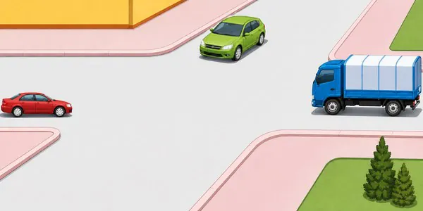
- Красный автомобиль.
- Синий автомобиль.
- Зелёный автомобиль.
Answer: 3
31.PDF page 16 - g5-q031
Водитель какого транспортного средства должен уступить дорогу?
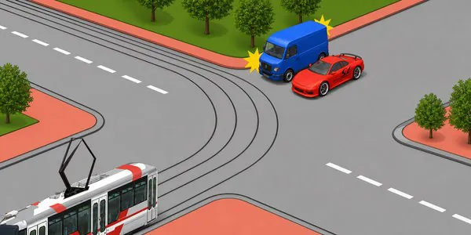
- Водитель трамвая.
- Водитель грузового автомобиля.
- Водители автомобилей.
Answer: 3
32.PDF page 16 - g5-q032
Красный автомобиль проедет перекрёсток:
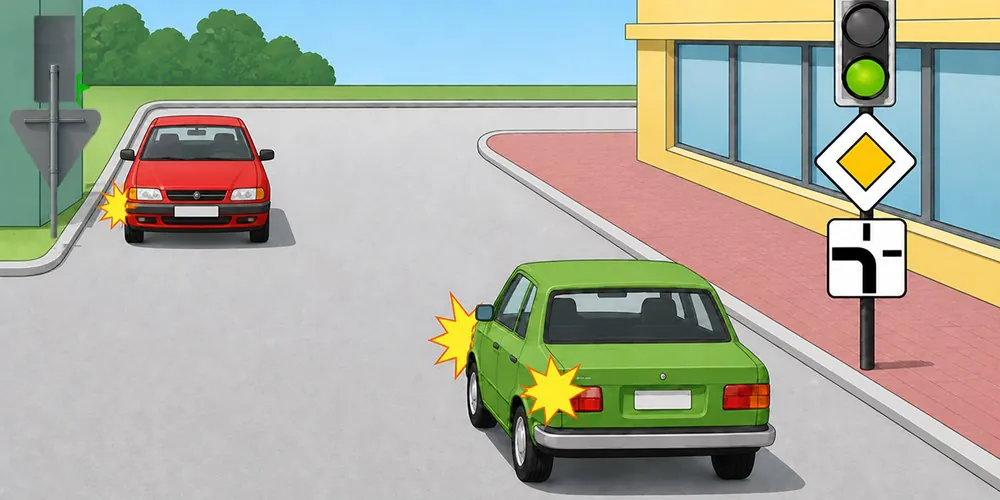
- Первым.
- Вторым.
Answer: 1
33.PDF page 17 - g5-q033
Транспортные средства проедут перекрёсток в следующей последовательности:
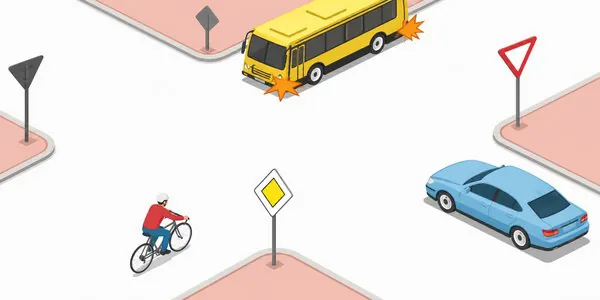
- Легковой автомобиль, автобус, велосипед.
- Автобус, велосипед, легковой автомобиль.
- Автобус, легковой автомобиль, велосипед.
- Велосипед, автобус, легковой автомобиль.
Answer: 4
34.PDF page 17 - g5-q034
Водитель какого транспортного средства имеет преимущество в движении?
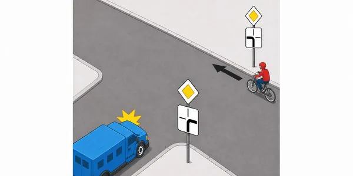
- Водитель автомобиля.
- Велосипедист.
Answer: 2
35.PDF page 18 - g5-q035
Транспортные средства проедут перекрёсток в следующей последовательности:
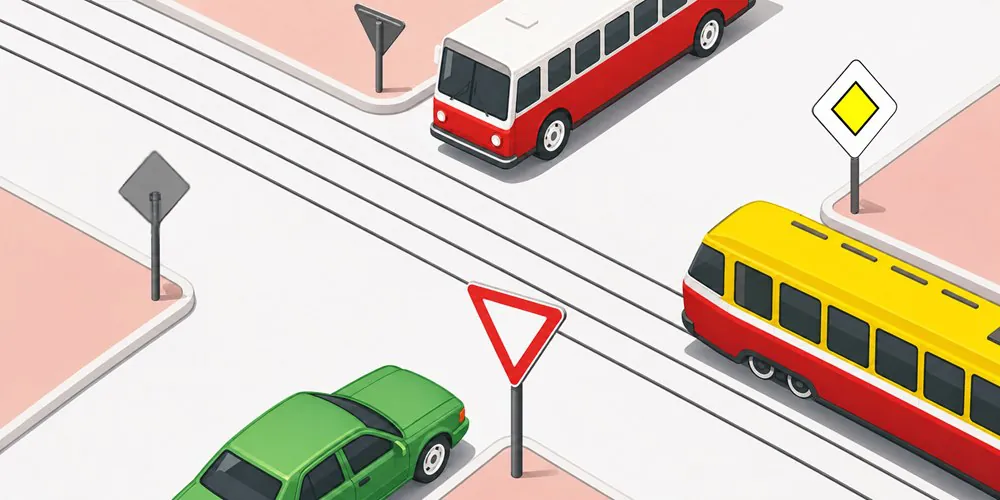
- Трамвай, затем автомобиль и автобус одновременно.
- Трамвай, автобус, автомобиль.
- Автобус, трамвай, автомобиль.
Answer: 1
36.PDF page 18 - g5-q036
Водитель какого транспортного средства должен уступить дорогу?
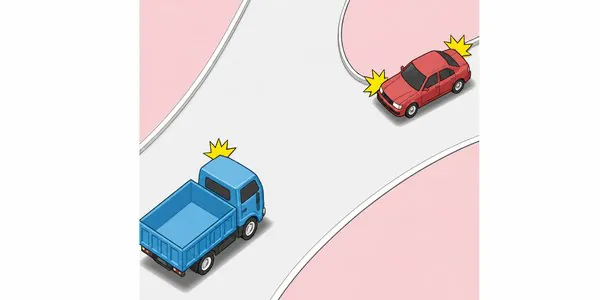
- Водитель синего автомобиля.
- Водитель красного автомобиля.
Answer: 1
37.PDF page 19 - g5-q037
Водитель какого транспортного средства должен уступить дорогу?
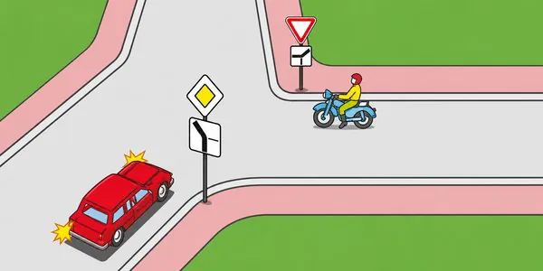
- Водитель автомобиля.
- Водитель мотоцикла.
Answer: 2
38.PDF page 19 - g5-q038
Водитель какого транспортного средства правильно въезжает на перекрёсток с круговым движением?
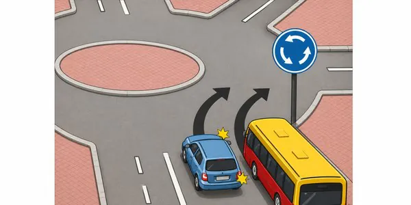
- Оба водителя.
- Только водитель автобуса.
- Только водитель легкового автомобиля.
Answer: 1
39.PDF page 20 - g5-q039
Какое транспортное средство имеет преимущество в движении?
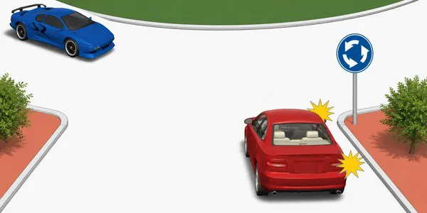
- Красный автомобиль, поскольку въезжает на перекрёсток с круговым движением справа от синего автомобиля.
- Синий автомобиль, поскольку движется по дороге с круговым движением.
Answer: 2
40.PDF page 20 - g5-q040
Укажите очерёдность проезда перекрёстка:
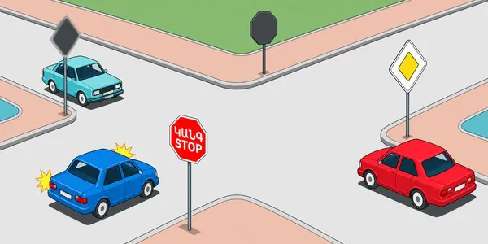
- Синий, затем красный одновременно с зелёным.
- Красный, синий, зелёный.
- Красный одновременно с зелёным, затем синий.
Answer: 3
41.PDF page 21 - g5-q041
Водитель зелёного автомобиля:
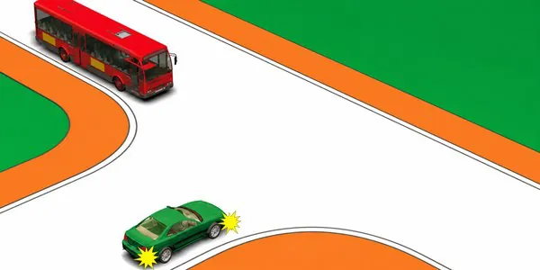
- Имеет преимущество в движении.
- Должен уступить дорогу.
Answer: 1
42.PDF page 21 - g5-q042
Последним перекрёсток проедет:
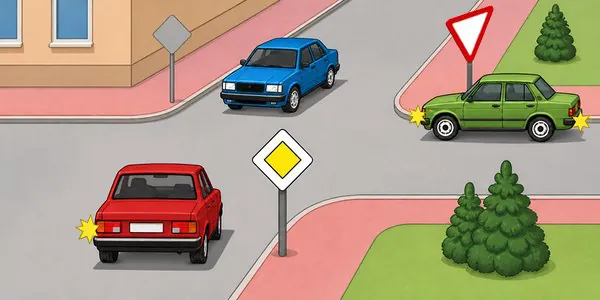
- Красный автомобиль.
- Синий автомобиль.
- Зелёный автомобиль.
Answer: 3
43.PDF page 22 - g5-q043
Вторым перекрёсток проедет:
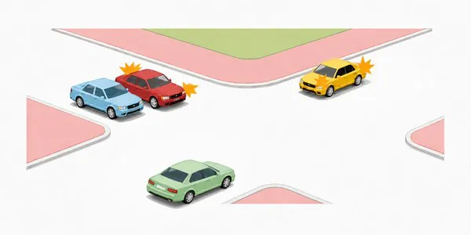
- Зелёный автомобиль.
- Красный автомобиль одновременно с синим.
- Жёлтый автомобиль.
Answer: 2
44.PDF page 22 - g5-q044
Автомобили проедут перекрёсток в следующей последовательности:
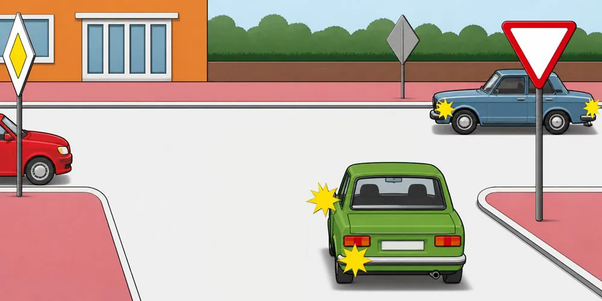
- Синий, зелёный, красный.
- Красный, синий, зелёный.
- Зелёный, красный, синий.
Answer: 2
45.PDF page 23 - g5-q045
Вторым перекрёсток проедет:
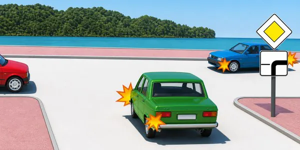
- Зелёный автомобиль.
- Синий автомобиль.
- Красный автомобиль.
Answer: 1
46.PDF page 23 - g5-q046
Красный автомобиль проедет перекрёсток:
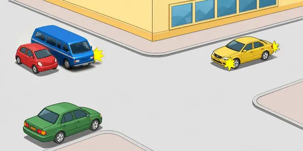
- Вторым, одновременно с синим автомобилем.
- Вторым, после жёлтого автомобиля.
- Третьим, после зелёного и жёлтого автомобилей.
Answer: 1
47.PDF page 24 - g5-q047
Жёлтый автомобиль проедет перекрёсток:
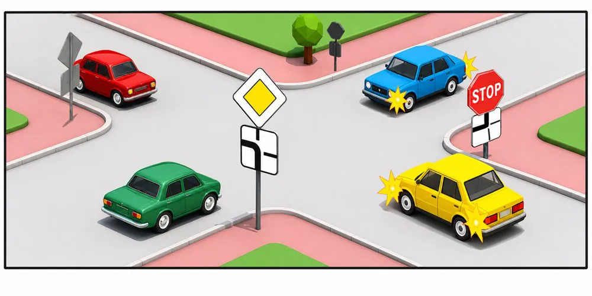
- Первым.
- Вторым.
- Третьим.
- Последним.
Answer: 4
48.PDF page 24 - g5-q048
В каком ответе правильно указана очерёдность проезда?
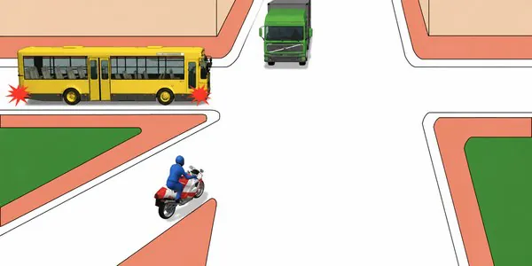
- Мотоцикл, автобус, грузовой автомобиль.
- Автобус, мотоцикл, грузовой автомобиль.
- Автобус, грузовой автомобиль, мотоцикл.
Answer: 1
49.PDF page 25 - g5-q049
Транспортные средства проедут перекрёсток в следующей последовательности:
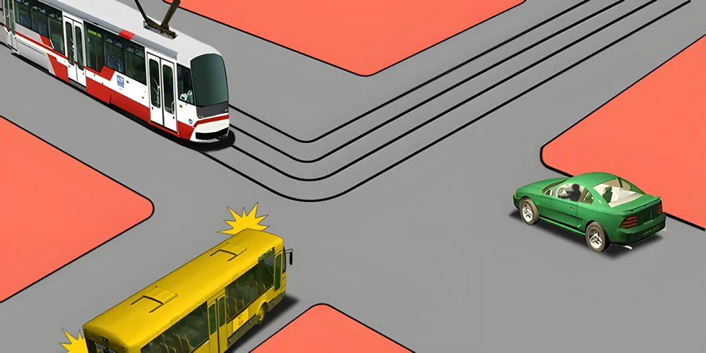
- Легковой автомобиль, автобус, трамвай.
- Трамвай, автобус, легковой автомобиль.
- Трамвай, легковой автомобиль, автобус.
Answer: 3
50.PDF page 25 - g5-q050
Водитель какого транспортного средства должен уступить дорогу?
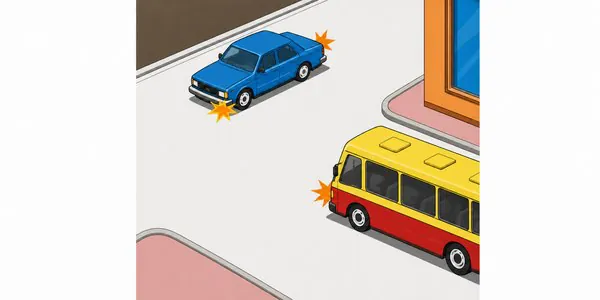
- Водитель легкового автомобиля.
- Водитель автобуса.
Answer: 2
51.PDF page 26 - g5-q051
Какое транспортное средство должно уступить дорогу?
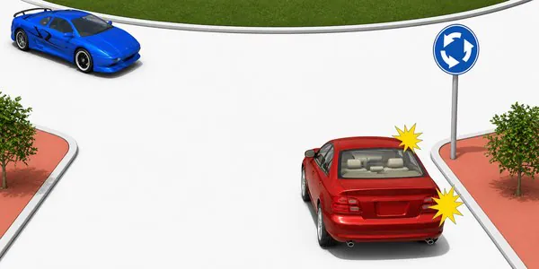
- Синий автомобиль.
- Красный автомобиль.
Answer: 2
52.PDF page 26 - g5-q052
Транспортные средства проедут перекрёсток в следующей последовательности:
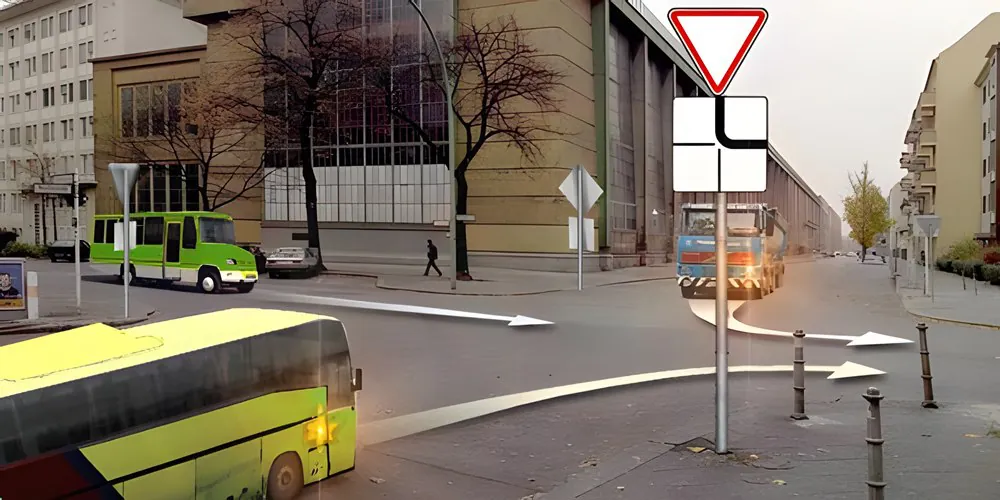
- Жёлтый автобус, грузовой автомобиль, зелёный автобус.
- Грузовой автомобиль, жёлтый автобус, зелёный автобус.
- Жёлтый автобус, зелёный автобус, грузовой автомобиль.
Answer: 2
53.PDF page 27 - g5-q053
Транспортные средства проедут перекрёсток в следующей последовательности:
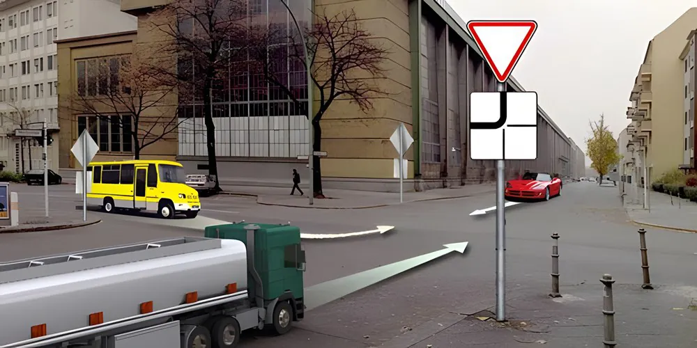
- Автобус, затем легковой и грузовой автомобили одновременно.
- Легковой и грузовой автомобили одновременно, затем автобус.
Answer: 1
54.PDF page 27 - g5-q054
В какой последовательности транспортные средства проедут перекрёсток, если светофоры не работают?
- Троллейбус и мотоцикл, затем автобус и легковой автомобиль.
- Мотоцикл, затем автобус и легковой автомобиль, затем троллейбус.
- Автобус и легковой автомобиль, затем троллейбус и мотоцикл.
Answer: 2
55.PDF page 28 - g5-q055
Транспортные средства проедут перекрёсток в следующей последовательности:
- Грузовой автомобиль, затем трамвай и автобус, затем мотоцикл и легковой автомобиль.
- Трамвай и автобус, затем мотоцикл и легковой автомобиль, затем грузовой автомобиль.
Answer: 1
56.PDF page 28 - g5-q056
Транспортные средства проедут перекрёсток в следующей последовательности:
- Автомобиль скорой медицинской помощи, трамвай, мотоцикл, автобус, легковой автомобиль.
- Мотоцикл, автобус, затем трамвай и автомобиль скорой медицинской помощи, затем легковой автомобиль.
Answer: 2
57.PDF page 29 - g5-q057
Транспортные средства проедут перекрёсток в следующей последовательности:
- Грузовой автомобиль и мотоцикл, затем автобус, затем троллейбус.
- Грузовой автомобиль и автобус, затем мотоцикл, затем троллейбус.
Answer: 1
58.PDF page 29 - g5-q058
Транспортные средства проедут перекрёсток в следующей последовательности:
- Грузовой автомобиль, легковой автомобиль, автобус, автоцистерна.
- Грузовой автомобиль, автобус, легковой автомобиль, автоцистерна.
Answer: 1
59.PDF page 30 - g5-q059
Легковой автомобиль проедет перекрёсток:
- Первым.
- Вторым, после автобуса.
- Третьим.
Answer: 2
60.PDF page 30 - g5-q060
Транспортные средства проедут перекрёсток в следующей последовательности:
- Легковой автомобиль, автобус, грузовой автомобиль.
- Автобус, грузовой автомобиль, легковой автомобиль.
- Автобус, легковой автомобиль, грузовой автомобиль.
Answer: 2
61.PDF page 31 - g5-q061
Транспортные средства проедут перекрёсток в следующей последовательности:
- Грузовой автомобиль, легковой автомобиль, автобус.
- Автобус, грузовой автомобиль, легковой автомобиль.
- Автобус, легковой автомобиль, грузовой автомобиль.
Answer: 1
62.PDF page 31 - g5-q062
Могут ли транспортные средства одновременно выполнить поворот налево?
- Да.
- Нет. Водитель легкового автомобиля должен уступить дорогу.
- Нет. Водитель грузового автомобиля должен уступить дорогу.
Answer: 1
63.PDF page 31 - g5-q063
Кому Вы обязаны уступить дорогу в данной ситуации?
- Только автобусу.
- Легковому автомобилю.
- Никому.
Answer: 3
64.PDF page 32 - g5-q064
При повороте налево в данной ситуации:
- Вы проедете перекрёсток первым.
- Следует уступить дорогу водителю грузового автомобиля.
Answer: 1
65.PDF page 32 - g5-q065
При повороте направо в данной ситуации:
- Вы проедете перекрёсток первым.
- Следует уступить дорогу водителю легкового автомобиля.
Answer: 1
66.PDF page 32 - g5-q066
При повороте налево Вы обязаны уступить дорогу:
- Водителям легкового автомобиля и трамвая A.
- Только водителю трамвая A.
- Водителям трамваев.
- Никому.
Answer: 2
67.PDF page 33 - g5-q067
При продолжении движения прямо:
- Вы проедете перекрёсток первым.
- Вы проедете после легкового автомобиля.
Answer: 2
68.PDF page 33 - g5-q068
При выполнении разворота в данной ситуации необходимо уступить дорогу:
- Легковому автомобилю.
- Обоим водителям.
Answer: 1
69.PDF page 33 - g5-q069
В данной ситуации мы обязаны не создавать помех пешеходам:
- Да.
- Нет.
Answer: 1
70.PDF page 34 - g5-q070
Въезд на перекрёсток при заторе, образовавшемся непосредственно за ним, разрешается:
- Если движение будет продолжено прямо.
- Если выполняется поворот или разворот.
- Во всех перечисленных случаях.
Answer: 2
71.PDF page 34 - g5-q071
Мы обязаны уступить дорогу:
- Водителю мотоцикла.
- Легковому автомобилю.
- Никому.
Answer: 3
72.PDF page 34 - g5-q072
При проезде перекрёстка водитель обязан уступить дорогу:
- Только водителям трамваев.
- Водителям легкового автомобиля и трамвая B.
- Никому.
- Всем.
Answer: 2
73.PDF page 35 - g5-q073
При повороте налево в данной ситуации мы обязаны уступить дорогу:
- Водителю легкового автомобиля.
- Водителю автобуса.
- Никому.
Answer: 3
74.PDF page 35 - g5-q074
Мы обязаны уступить дорогу:
- Только водителю трамвая.
- Водителю грузового автомобиля.
- Обоим водителям.
Answer: 3
75.PDF page 35 - g5-q075
Уступить дорогу следует:
- Водителю автобуса.
- Обоим водителям.
- Никому.
Answer: 3
76.PDF page 36 - g5-q076
При проезде перекрёстка в данной ситуации уступить дорогу:
- Вы обязаны.
- Вы не обязаны.
Answer: 2
77.PDF page 36 - g5-q077
При проезде перекрёстка в данной ситуации:
- Мы имеем право проехать первыми.
- Мы должны уступить дорогу водителю трамвая.
- Мы должны уступить дорогу водителю грузового автомобиля.
- Мы должны уступить дорогу всем водителям.
Answer: 1
78.PDF page 36 - g5-q078
При въезде на перекрёсток с круговым движением, обозначенный знаком «Круговое движение», водитель транспортного средства:
(no picture)
- Обязан уступить дорогу транспортным средствам, движущимся по этому перекрёстку.
- Имеет преимущество перед транспортными средствами, движущимися по этому перекрёстку.
Answer: 1
79.PDF page 37 - g5-q079
При повороте налево в данной ситуации мы обязаны уступить дорогу:
- Всем водителям.
- Только водителю легкового автомобиля.
- Водителям автобуса и легкового автомобиля.
Answer: 3
80.PDF page 37 - g5-q080
Какой водитель обязан не создавать помех пешеходам?
- Водитель легкового автомобиля.
- Водитель грузового автомобиля.
- Оба водителя.
Answer: 3
81.PDF page 37 - g5-q081
Может ли водитель выполнить поворот налево в данной ситуации?
- Да.
- Да, если это не создаст помех водителю грузового автомобиля.
- Нет.
Answer: 2
82.PDF page 38 - g5-q082
При повороте налево в данной ситуации водитель:
- Должен уступить дорогу.
- Проедет перекрёсток первым.
Answer: 1
83.PDF page 38 - g5-q083
Знаки информируют о том, что:
- Через 200 м необходимо уступить дорогу транспортным средствам, движущимся по пересекаемой дороге.
- На участке протяжённостью 200 м необходимо уступать дорогу всем транспортным средствам.
Answer: 1
84.PDF page 38 - g5-q084
При выполнении поворота налево на втором пересечении водитель:
- Имеет преимущество.
- Должен уступить дорогу другим водителям.
- Должен уступить дорогу водителю автобуса.
Answer: 3
85.PDF page 39 - g5-q085
При проезде перекрёстка прямо водитель:
- Может проехать первым.
- Должен уступить дорогу трамваю.
- Должен уступить дорогу обоим водителям.
Answer: 2
86.PDF page 39 - g5-q086
Кому водитель обязан уступить дорогу при повороте налево?
- Водителю автобуса.
- Водителю легкового автомобиля.
- Никому.
Answer: 1
87.PDF page 39 - g5-q087
При въезде на данный перекрёсток водитель:
- Имеет преимущество в движении.
- Должен уступить дорогу грузовому автомобилю.
- Должен уступить дорогу обоим водителям.
Answer: 3
88.PDF page 40 - g5-q088
Кому водитель обязан уступить дорогу при повороте налево?
- Обоим водителям.
- Водителю легкового автомобиля.
- Водителю автобуса.
Answer: 1
89.PDF page 40 - g5-q089
В данной ситуации мы обязаны уступить дорогу:
- Обоим водителям.
- Только грузовому автомобилю, приближающемуся по встречной полосе.
Answer: 1
90.PDF page 40 - g5-q090
При повороте налево:
- Вы проедете перекрёсток первым.
- Вы уступите дорогу.
Answer: 1
91.PDF page 41 - g5-q091
Поворот направо в данной ситуации выполняется:
- С проездом перекрёстка первым.
- С уступлением дороги водителю легкового автомобиля.
- С уступлением дороги обоим водителям.
Answer: 1
92.PDF page 41 - g5-q092
При повороте направо:
- Вы должны уступить дорогу.
- Вы можете проехать первым.
Answer: 2
93.PDF page 41 - g5-q093
При повороте налево Вы должны уступить дорогу:
- Водителям автобуса и мотоцикла.
- Водителю автобуса.
- Всем.
Answer: 3
94.PDF page 42 - g5-q094
При повороте налево:
- Вы проедете первым одновременно с легковым автомобилем.
- Вы проедете после мотоцикла.
Answer: 2
95.PDF page 42 - g5-q095
При движении прямо Вы обязаны уступить дорогу:
- Обоим водителям.
- Только легковому автомобилю.
- Никому.
Answer: 1
96.PDF page 42 - g5-q096
Уступить дорогу трамваю:
- Мы обязаны.
- Мы не обязаны.
Answer: 1
97.PDF page 43 - g5-q097
Когда в данной ситуации разрешается выполнить поворот направо?
- Немедленно.
- Одновременно с проездом грузового автомобиля, если ему не будут созданы помехи.
- После проезда грузового автомобиля.
Answer: 2
98.PDF page 43 - g5-q098
При проезде перекрёстка прямо Вы обязаны уступить дорогу:
- Только водителю трамвая A.
- Только водителю трамвая B.
- Обоим водителям.
- Никому.
Answer: 3
99.PDF page 43 - g5-q099
При повороте налево Вы обязаны уступить дорогу:
- Только водителю автобуса.
- Обоим водителям.
- Никому.
Answer: 1
100.PDF page 44 - g5-q100
Кто первым проедет перекрёсток?
- Водитель грузового автомобиля.
- Водитель троллейбуса.
- Правила не регулируют данный случай. Водители проедут, руководствуясь взаимным уважением.
Answer: 3
101.PDF page 44 - g5-q101
Водитель обязан не создавать помех пешеходам:
- Только при повороте налево.
- Только при повороте направо.
- В обоих случаях.
Answer: 3
102.PDF page 44 - g5-q102
При повороте направо Вы обязаны уступить дорогу:
- Пешеходам и велосипедистам.
- Только пешеходам.
Answer: 1
103.PDF page 45 - g5-q103
При повороте налево Вы обязаны уступить дорогу:
- Только водителю легкового автомобиля.
- Водителям легкового автомобиля и автобуса.
- Никому.
Answer: 1
104.PDF page 45 - g5-q104
Если водитель не может определить наличие покрытия дороги (в тёмное время суток, из-за грязи, снега и т. п.) и отсутствуют знаки приоритета, то:
(no picture)
- Он должен считать, что находится на второстепенной дороге.
- Он должен руководствоваться правилами проезда перекрёстков равнозначных дорог.
Answer: 1
105.PDF page 45 - g5-q105
В данной ситуации мы обязаны уступить дорогу:
- Всем водителям.
- Только водителю грузового автомобиля.
- Только водителю легкового автомобиля.
Answer: 1
106.PDF page 46 - g5-q106
Мы обязаны уступить дорогу:
- Водителю легкового автомобиля.
- Водителям автобуса и легкового автомобиля.
- Всем водителям.
Answer: 2
107.PDF page 46 - g5-q107
При выполнении разворота на данном перекрёстке:
- Я выполню манёвр первым.
- Следует уступить дорогу другому водителю.
Answer: 2
108.PDF page 46 - g5-q108
При мигающем жёлтом сигнале светофора, проезжая перекрёсток прямо, мы обязаны:
- Остановиться и ожидать включения разрешающего зелёного сигнала.
- Уступить дорогу водителю легкового автомобиля.
- Уступить дорогу водителю трамвая.
Answer: 2
109.PDF page 47 - g5-q109
При движении прямо:
- Мы можем проехать перекрёсток первыми.
- Следует уступить дорогу.
Answer: 2
110.PDF page 47 - g5-q110
Кому Вы должны уступить дорогу при выполнении разворота?
- Водителю грузового автомобиля.
- Водителю легкового автомобиля.
- Обоим водителям.
Answer: 1
111.PDF page 47 - g5-q111
При повороте налево уступить дорогу трамваю:
- Мы обязаны.
- Мы не обязаны.
Answer: 1
112.PDF page 48 - g5-q112
На данном перекрёстке грузовому автомобилю, приближающемуся по дороге без покрытия:
- Мы обязаны уступить дорогу, поскольку он приближается справа.
- Мы не обязаны уступать дорогу, поскольку дорога с твёрдым покрытием является главной по отношению к дороге без покрытия.
Answer: 2
113.PDF page 48 - g5-q113
При мигающем жёлтом сигнале светофора:
- Следует ожидать включения зелёного сигнала.
- Мы проедем перекрёсток, уступив дорогу водителю гужевой повозки.
- Вы проедете перекрёсток одновременно с легковым автомобилем.
Answer: 2
114.PDF page 48 - g5-q114
При повороте налево мы обязаны уступить дорогу:
- Водителю легкового автомобиля.
- Водителю автобуса.
- Водителю мотоцикла.
- Никому.
Answer: 4
115.PDF page 49 - g5-q115
В данной ситуации:
- Мы обязаны уступить дорогу водителю грузового автомобиля.
- Мы можем проехать перекрёсток одновременно с трамваем.
Answer: 1
116.PDF page 49 - g5-q116
При проезде перекрёстка мы обязаны уступить дорогу:
- Водителю мотоцикла.
- Водителям мотоцикла и автобуса.
- Водителям автобуса и легкового автомобиля.
- Всем водителям.
Answer: 4
117.PDF page 49 - g5-q117
В данной ситуации Вы должны уступить дорогу:
- Только водителю трамвая.
- Водителю легкового автомобиля.
- Водителям легкового автомобиля и трамвая.
- Всем водителям.
Answer: 3
118.PDF page 50 - g5-q118
При повороте налево в данной ситуации:
- Вы проедете перекрёсток первым.
- Въехав на перекрёсток, Вы уступите дорогу водителю мотоцикла, после чего завершите манёвр.
Answer: 2
119.PDF page 50 - g5-q119
При проезде перекрёстка прямо необходимо уступить дорогу:
- Водителю грузового автомобиля.
- Водителю легкового автомобиля.
- Обоим водителям.
Answer: 3
120.PDF page 50 - g5-q120
В данной ситуации:
- Вы проедете перекрёсток первым.
- Вы уступите дорогу водителю легкового автомобиля.
- Вы уступите дорогу обоим водителям.
Answer: 2
121.PDF page 51 - g5-q121
Мы обязаны уступить дорогу:
- Обоим водителям.
- Водителю легкового автомобиля.
- Водителю автобуса.
Answer: 1
122.PDF page 51 - g5-q122
На данном перекрёстке:
- Вы проедете первым.
- Вы уступите дорогу грузовому автомобилю.
Answer: 2
123.PDF page 51 - g5-q123
Уступить дорогу водителю трамвая:
- Мы обязаны.
- Мы не обязаны.
Answer: 1
124.PDF page 52 - g5-q124
При повороте налево следует уступить дорогу:
- Водителю грузового автомобиля.
- Обоим водителям.
- Никому.
Answer: 1
125.PDF page 52 - g5-q125
На данном перекрёстке:
- Вы уступите дорогу.
- Вы проедете первым.
Answer: 2
126.PDF page 52 - g5-q126
При продолжении движения прямо уступить дорогу трамваю:
- Мы обязаны.
- Мы не обязаны.
Answer: 1
127.PDF page 53 - g5-q127
Уступить дорогу трамваю:
- Мы обязаны.
- Мы не обязаны.
Answer: 1
128.PDF page 53 - g5-q128
В данной ситуации поворот направо разрешается:
- Только после проезда грузового автомобиля.
- Одновременно с грузовым автомобилем, если это не создаст помех его водителю.
Answer: 2
129.PDF page 53 - g5-q129
Водителю какого трамвая мы обязаны уступить дорогу?
- Только трамвая A.
- Только трамвая B.
- Обоих трамваев.
Answer: 3
130.PDF page 54 - g5-q130
При движении прямо следует уступить дорогу:
- Водителю легкового автомобиля.
- Всем.
- Никому.
Answer: 1
131.PDF page 54 - g5-q131
В данной ситуации необходимо уступить дорогу:
- Водителю автобуса.
- Водителю грузового автомобиля.
- Обоим водителям.
Answer: 3
132.PDF page 54 - g5-q132
При каком знаке на перекрёстке вы должны уступить дорогу водителям, приближающимся слева?
- Только A
- Только при знаке B.
- A и B
- При всех знаках.
Answer: 2
133.PDF page 55 - g5-q133
На каком рисунке изображена главная дорога?
- Только на левом.
- На нижнем и левом.
- На всех.
Answer: 2
134.PDF page 55 - g5-q134
На каком рисунке изображена главная дорога?
- Только на правом.
- На правом и нижнем.
- На всех.
Answer: 2
135.PDF page 55 - g5-q135
На каком рисунке изображена главная дорога?
- На верхнем левом.
- На верхнем правом.
- На верхних рисунках.
- На всех.
Answer: 3
136.PDF page 56 - g5-q136
Какая дорога на перекрёстке считается главной?
(no picture)
- Дорога с твёрдым покрытием (асфальтобетон, цементобетон, каменные материалы и т. п.) по отношению к грунтовой дороге.
- Трёхполосная дорога по отношению к дороге, имеющей по одной полосе в каждом направлении.
- Асфальтобетонная дорога по отношению к дороге с плиточным покрытием.
Answer: 1